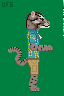
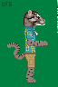

My website is under a GPL v2, and while I would like for it to apply to my art, GPL was not made for art/images. As such, I would like the license to be respected to all reasonable extents. And where it does not, for at least my art be credited to me, preferably by my alliance "uranium6fluoride".

Umbriel is named after a moon of Neptune. He is a dragonborn druid. He is currently in a D&D campaign has a pirate.
Background:
I grew up on an unoccupied island in the Central Sea with my mom (Nereid), dad (Halimede), elder sister (Sao), younger brother (Hippocamp). I enjoyed alchemy, so my dad would bring home chemicals.
Me and Hippocamp would play in the woods. We created a fort along with my friend Oberon. Us 3 would practice our breath weapons, do questionable alchemy, and other shenanigans. One day when we were in the fort we saw a ship and the roar of an air horn from far away. Oberon flew and saw a small army approaching. We ran home and told the town, some believed us, some did not. But soon the Imperial League arrived and occupied the island with little resistance.
I was drafted in a war (conquering land occupied pirates) by the Imperial League (Anglarans) (Corpral Hudson). Oberon was not drafted due to their broken wing. I was trained to kill. One day a raid brought back more soldiers, one of these soldiers is Iapetus from Ilus. We grew close. Our first mission was to attack the Pirate Lord Tosen on Haien. Although one day when we were forced to fight, Iapetus was killed in battle. Before he dead he told me to see the living archipelago. I took Iapetus' dog tags. I deserted after. I keep an amulet my family gave me.
I ran back to my home and made sure my family and friends were safe. They were living in worse condition. I could not stay though, I was wanted for running away, so I went to the woods of a nearby uninhabited island. I learned how to live off the land and lived there for a few years. I later moved to a port city. Then I joined a group of weirdos in a tavern.


Umbriel is named after a moon of Uranus. He is the main character in a story I am currently working on.


Divum is a chickadee. His name roughly translates to "sky" or "open air" in Latin. As of now Divum does not have much background, this is one of my first drawings and I just wanted to try my hand at an anthro bird. I started with a normal chickadee and when I had the colors and patterns down, drew the anthro form while checking to make sure the proportions looked right.

 



Flovius is a fishing cat. His name roughly translates to "river" in Latin. Flovius enjoys traveling and the outdoors. I project a lot of my enjoyment of nature onto him.